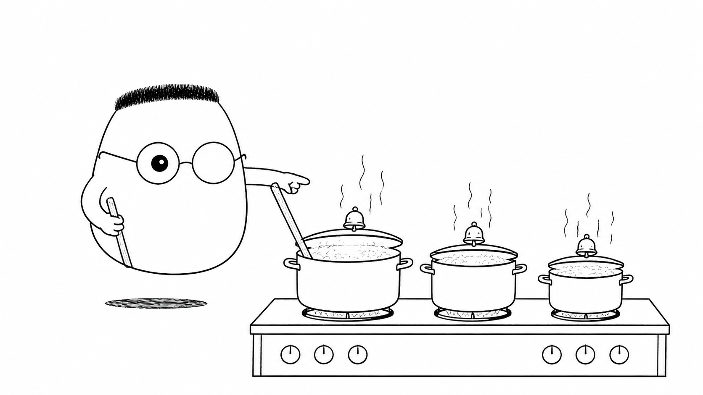
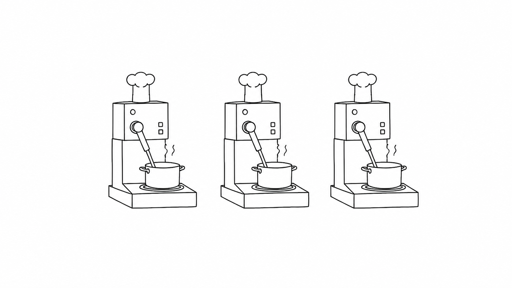
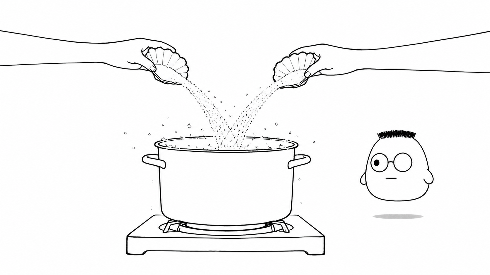

Masalah sehari-hari
Dapur restoran menerima banyak pesanan. Satu panci perlu waktu untuk mendidih, sedangkan sayur di meja sudah siap dipotong. Jika Kuka hanya menatap panci, tamu lain menunggu tanpa alasan.
Analogi Kuka
Kuka bekerja sendirian di dapur dengan beberapa panci. Ia menyalakan kompor, meninggalkan panci yang sedang menunggu, lalu berpindah ke meja potong.
Saat bel panci berbunyi, Kuka kembali menuang bahan. Ia harus mengingat panci mana yang menunggu dan pekerjaan mana yang bisa diselingi.
Peta dapurnya
Menunggu rebusan adalah IO-bound, sedangkan menumbuk bumbu adalah CPU-bound. Menyelingi beberapa pesanan adalah konkurensi, sementara banyak juru masak bekerja bersamaan adalah paralelisme.
Ilustrasi

Perhatikan tangan dan waktunya. Kuka memanfaatkan waktu tunggu, lalu kembali saat pekerjaan di panci sudah siap.
Penjelasan konsep
Konkurensi penting karena pekerjaan backend jarang berjalan lurus tanpa jeda. Request sering menunggu jaringan, disk, database, atau service lain. Saat satu pekerjaan menunggu, server dapat mengerjakan pekerjaan lain.
Waktu duduk menganggur adalah biaya. Setiap detik juru masak menunggu panci adalah detik ketika pesanan lain belum disentuh. Menyelingi pekerjaan membuat waktu tunggu lebih berguna.
IO-bound banyak menghabiskan waktu untuk menunggu input atau output, seperti rebusan yang belum mendidih. CPU-bound banyak memakai waktu untuk menghitung, seperti menumbuk bumbu sampai halus. Menunggu dan menghitung membutuhkan strategi yang berbeda.
Konkurensi berarti beberapa pekerjaan maju dengan cara diselingi, meski hanya ada satu juru masak. Paralelisme berarti beberapa pekerjaan benar-benar berjalan pada waktu yang sama dengan beberapa juru masak atau core.

race condition terjadi saat dua pekerjaan mengubah state bersama tanpa urutan yang aman. Dua juru masak dapat menuang gula ke panci yang sama bersamaan, sehingga hasil akhirnya tidak sesuai rencana.

State bersama perlu aturan. Server harus tahu siapa yang boleh membaca atau mengubah data, kapan perubahan dimulai, dan kapan hasilnya boleh terlihat oleh pekerjaan lain.
Thread
Thread adalah asisten kecil yang dapat memegang satu pekerjaan. Banyak thread dapat membantu, tetapi masing-masing perlu memori dan waktu untuk dikelola.
Overhead dan context switching
Overhead adalah biaya tambahan untuk mengatur pekerjaan. Terlalu banyak thread membuat server sering berpindah pekerjaan, sehingga waktu habis untuk context switching.
Event loop
Event loop adalah satu juru masak yang memeriksa bel dari banyak panci. Ia mengambil pekerjaan yang siap tanpa menunggu panci lain selesai.
Async/await
Async/await memungkinkan pekerjaan meninggalkan catatan untuk dilanjutkan nanti. Kode tetap mudah diikuti, sementara juru masak dapat mengerjakan meja lain saat menunggu.
Goroutine
Goroutine adalah unit pekerjaan ringan yang dapat dibuat dalam jumlah besar. Runtime membantu mengatur pekerjaan itu di atas thread yang tersedia.
Lock, mutex, dan channel
Lock atau mutex memberi satu kunci pada panci. Channel menjadi jalur tiket untuk mengirim pekerjaan atau hasil antarjuru masak.
Memilih model
Pilih model berdasarkan bentuk kerja. Banyak menunggu cocok diselingi, sedangkan banyak menghitung biasanya membutuhkan core atau juru masak tambahan.
Diagram alur
Pesanan pertama menunggu rebusan. Kuka memotong sayur selama jeda, lalu kembali saat bel berbunyi. Tanpa aturan, dua tangan dapat menuang bersamaan dan membuat gula menjadi dobel.
Contoh mini
Kartu masuk Pesanan 1: rebus 10 menit Sambil menunggu: potong pesanan 2 Bel rebus bunyi Kembali tuang pesanan 1 Selesai: pesanan 1
Seperti kartu pos, catatan pesanan menunjukkan pekerjaan yang sedang menunggu dan pekerjaan yang bisa diselipkan. Kuka kembali ke pesanan pertama setelah bel berbunyi.
Ringkasan
- Konkurensi membuat server dapat mengerjakan tugas lain saat satu tugas menunggu.
- Waktu menganggur adalah biaya karena pekerjaan lain belum dilayani.
- IO-bound menunggu input atau output, sedangkan CPU-bound memakai waktu untuk menghitung.
- Konkurensi menyelingi pekerjaan, sedangkan paralelisme menjalankan pekerjaan secara bersamaan.
- Race condition muncul saat pekerjaan mengubah state bersama tanpa aturan yang aman.
- Thread, event loop, async/await, goroutine, lock, mutex, dan channel memberi pilihan cara mengatur pekerjaan.
Pertanyaan pemahaman
- Apa beda pekerjaan yang menunggu (IO-bound) dan yang menghitung (CPU-bound)?
- Apa beda konkurensi dan paralelisme?
- Apa yang terjadi kalau dua juru masak menuang ke panci yang sama tanpa aturan?
Mau lebih dalam
Versi teknis membahas cara memilih model concurrency, mengatur pekerjaan yang menunggu, dan menjaga state bersama.